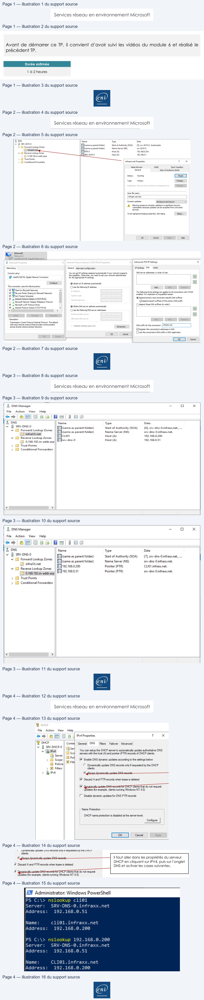
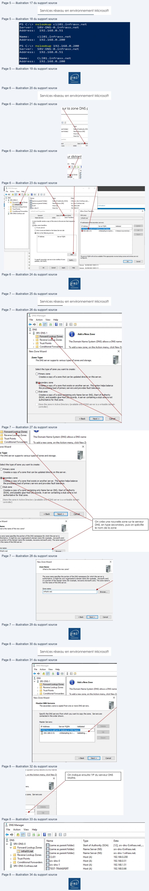
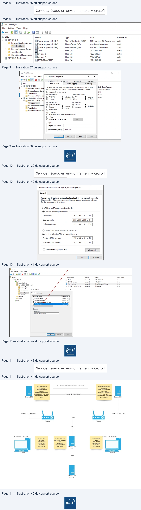

Transcription du document du Drive TSSR. La mise en forme est adaptée au Web ; les compléments IA du portail sont présentés séparément.
Services réseau en environnement Microsoft
TP du Module 06 – Le service DNS
Avant de démarrer ce TP, il convient d’avoir suivi les vidéos du module 6 et réalisé le
précédent TP.
Durée estimée
1 à 2 heures
Prérequis :
•
Avoir réalisé le TP précédent du module 05.
•
Un serveur DNS sera à mettre en place dans le réseau 192.168.0.0/24 ainsi que dans
le réseau 192.168.1.0/24.
•
Le routage entre les deux réseaux doit être fonctionnel.
Enregistrements dynamiques :
•
Sur le serveur DNS hébergeur, configurez les zones principales pour permettre
l’enregistrement dynamique des clients.
Page 1/11
© ENI – Tous droits réservés
Services réseau en environnement Microsoft
Il faut faire un clic droit sur la zone DNS, puis dans l’onglet Général, sélectionner Nonsecure
and Secure dans le champ Dynamic Update.
•
Sur les postes clients, configurez le suffixe DNS principal.
Il faut aller dans les propriétés de la carte réseau, puis cliquer sur Advanced, puis sur l’onglet
DNS.
•
Vérifiez la présence des nouveaux enregistrements DNS :
o avec la console DNS sur le serveur DNS hébergeur
Page 2/11
© ENI – Tous droits réservés
À DNS
Name
Type
Data
vi ae
x
Flisame as parent folder)
Start ofAuthority (SOA)
[3], srv-2k19-0,, host master.
va os Lookup Zones
Fisameas parent folder)
Name Server (NS)
sv-2k19-0.
à AE
Elrrro
Host (A)
192.168.0.254
Y
Reverse Lookup Zones
ISRV-2K19-0
Host
(A)
192.168.0.1
> FA 0.168,192.in-addr.arpa
8
lost
(A)
“1680:
> Of Trust Points
-
> ( Conditional Forwarders
infraam.net Properties
27
x
Name Servers
‘WINS
Zone Transfers
General
Start of Authority (SOA)
Type:
Primary
Change...
Replication:
Not an Active
Directory-integrated zone
Change...
Zone file name:
Dynamic updates:
Nonsecure and secure
v
À
Hlowing nonsecure dynamic updates is a significant security
vuherablity because updates can be accepted from untrusted
sources.
Toset aging/scavenging properties, cick Aging.
|
Adina...
Do] cn|} a
=)
Ethemet0
Network 2
ST Intel(R) 82574L Gigabit Network C..
@ Ethernet Properties
X | Internet Protocol Version4 (TCP/IPv4) Properties
X | Advanced
TCP/IP Settings
x
Networking
General
Alternate Configuration
IP Settings DNS
WINS
Connect using:
You can get IP settings assigned automatically if your network supports
DNS server addresses, in order of use:
this capabilty. Otherwise, you need to ask your network administrator
Intel) 825741 Gigabe Network Connection
for the appropriate IP settings.
t
|
Configure...
© obtain an IP address automatically
+
This connection
uses the folowing tems:
Ouse
the folowing IP address:
a
=
:
© BB lent for Mort Networks
a
1P adress
LE
=
The folowing
ve
settings are appliedto
al connections with TCP/IP
e
folowing
three settings are
alc
wi
Ble and Pinter Sharing for Microsoft Networks
-
enabled. For resolution of unqualified names:
‘Baq0s
Packet Schecter
subnet mac
Ce]
rel
connection spectic NS suf
ux. Intemet Protocol Version 4 (TCP/IPv4)
Default gateway
EE
© Append primary and cor
specif
sut
[I a. Microsoft Network Adapter Mutiplexor Protocol
M2 Append parent suffixes of
the primary DNS suffix
2. Microsoft LLDP Protocol Driver
ct
add
i
O Append these DNS suffixes (in order):
© à Intemet Protocol Version (TCP/IPv6)
9
©Obtain DNS server address automaticaly
t
«
>
‘Use the folowing DNS server addresses:
=
=
Preferred ONS sever
res
3
Transmission Control Protocol/intemet Protocol. The default
wide area network protocol that provides communication
~
:
across diverse interconnected networks
Vaidate settings upon exit
| Advanced...
DNS suffix for this connection:
| Nan
FiRegister this connection’s addresses in DNS
Use this connection's DNS suffix in DNS registration
Co
[eme |
D
.
ok
Cancel
a
cn
|
ent
Services réseau en environnement Microsoft
Voici le détail des fichiers de zone mis à jour par le serveur DHCP et le détail de la
configuration du serveur DHCP.
Page 3/11
© ENI – Tous droits réservés
À, DNS Manager
_
oO
x
File
Action
View
Help
en
SBI m| i aS
& DNS
Name
Type
Data
~
Ga SRV-DNS-0
Ftsameas parent folder)
Start
of Authority (SOA)
[6], srv-dns-0.infræoc.net., ...
ve
Gh rene Zones || FJ (same as parent folder)
Name Server (NS)
srv-dns-O.infracnet.
\ (5) Reverse Lookup Zones
Elcuor
Host (A)
192.168.0.200
[Sl 0.168.192.in-addr.arp Fisrv-ans-0
Host (A)
192.168.0.51
> © Trust Points
> © Conditional Forwarders
<
>
À, DNS Manager
—
[=]
x
File
Action
View
Help
e9>\2n/OSa8\Emli aa
& DNS
Name
Type
Data
¥ i an kupZ
Fame as parent folder)
Start of Authority (SOA)
[7], srv-dns-0.infraxx.net., …
vo a ue ne ones
Fame as parent folder)
Name Server (NS)
srv-dns-0.infraxx.net.
, ieee Zones [IE 192:168.0.200
Pointer (PTR)
CLIOT infraxenet.
© 0.168.192— Elo216051
Pointer (PTR)
stv-dns-0.infracanet.
> © Trust Points
> ©) Conditional Forwarders
<
>
eni
Services réseau en environnement Microsoft
Il faut aller dans les propriétés du serveur
DHCP en cliquant sur IPV4, puis sur l’onglet
DNS et activer les cases suivantes.
o Avec la commande nslookup
Avec la configuration du suffixe DNS configuré
Sans la configuration du suffixe, il faut ajouter le nom de domaine.
Page 4/11
© ENI – Tous droits réservés
3
File
Action
View
Help
+ #5
E @
IPv4 Properties
?
x
@ DHCP
Contet
General
DNS
Fitters
Failover
Advanced
v
gg SRV-DHCP-O || pox 5
v a IPv4
= <
You can setup the DHCP serverto automatically update authoritative DNS
2 Server ||
11 S¢4 | servers with the host (A) and pointer (PTR) recordsof DHCP clients
3
:
3 Scope || > n
FN Enable DNS dynamic updates according to the settings below
A Fi
À Policie
C Dynamically update DNS records only f requested by the DHCP
|
Filters
clients
Pe
@ ¢iways dynamically
update DNS records
¥ Discard A and PTR records when lease is deleted
IV
Qunamically
update
Dt
ords for DACP clients that do not request
updates for example, clients running Windows NT 4.0)
|” Disable dynamic updates for DNS PTR records
Name Protection
DHCP name protection is disabled at the server level
Configure
cond |
[NA
ES Administrator: Windows PowerShell
PS C:\> nslookup c1i81
Server:
SRV-DNS-@.infraxx.net
Address:
192.168.8.51
Name:
cli@l.infraxx.net
Address:
197.165.686.266
PS
C:\} nslookup 192.166.6.
2008
Server:
SRV-DNS-@.infraxx.net
Address:
192.168.6.51
Name:
CLI@1.infraxx.net
Address:
197.165.6.
208
ED

Services réseau en environnement Microsoft
o Quels types d’enregistrements sont créés ? Des enregistrements de type A et TXT.
Page 5/11
© ENI – Tous droits réservés
PS
C:\>
nslookup
c1i@1.infraxx.net
Server:
SRV-DNS-@.infraxx.net
Address:
1927 .168.6.51
Name:
cli@l.infraxx.net
Address:
192.168.686.266
PS
C:\>
nslookup
192.168.686.206
Server:
SRV-DNS-6.infraxx.net
Address:
192.168.8.51
Name:
CLI@1.infraxx.net
Address:
1923 .168.8.
2608
ED
Services réseau en environnement Microsoft
Mise en œuvre de la redondance DNS :
Vérifiez au préalable que le routage est opérationnel entre les deux réseaux.
Vous réaliserez un schéma des infrastructures.
•
Sur le serveur DNS hébergeur du réseau 192.168.0.0/24 :
o Configurez les zones principales, et le transfert de zone pour permettre le
transfert à partir du serveur DNS hébergeur du réseau 192.168.1.0/24.
Il faut faire un clic droit sur la zone DNS puis dans l’onglet Zone Transfers, il faut ajouter l’IP
du serveur distant.
•
Sur le serveur DNS du réseau 192.168.1.0/24 :
o Configurez les zones secondaires et le transfert de zone pour permettre le
transfert à partir du serveur DNS du réseau 192.168.0.0/24.
Page 6/11
© ENI – Tous droits réservés
File
Action
View
Help
le+ 2m XOes\bml se
q & DNS
Name
pe
Data
¥ A SRV-DNS-0
Fameas parent folder)
Stak of Authority (SOA)
[10], frv-dns-O.infraccnet,
va “ms À Zones || Flsameas parent folder)
Nam Server (NS)
srv-dns-0.infraccnet.
P
a hee Lockup Zones ||EICLOT
Host (A)
192.68.0.200
E Activation
I
HA Trust Points
Flsw-ans-0
Host (A)
192.168.0.51
:
> Hi Conditional Forwarders ||| infraXX.net Propertie
?
| x | Allow
Zone Transfers
x
&
SRV-DNS-Dinfracnet
General
Startof
AutMority (SOA)
DNS zone:
AA zone transfer sends a copy of the zone to the servers that requests
copy.
IP addresses of the secondary servers:
[Allow zone transfers:
IP Address
Server FQDN
Validated
Delete
Oroany server
[[-Cick here .o add an IP Address or ONS Name >D
Only to servers isted on the Name Servers tab
9 192. 168.1.51
<Attempting to resolve...
A tmeout occurred dur...
up
@only to the folowing servers
Down
|
si
cal
st
The server FQON will not be available if the appropriate reverse lookup zones and entries are not
configured.
st
To specify secondary servers to be notified ofzone
[ Notify...
joa
eT
st
} Server
02/06/2021 09:51:11
st
[oc| [cancel| [only| [Hee{semer ozmezozionsnty
Services réseau en environnement Microsoft
On crée une nouvelle zone sur le serveur
DNS, en type secondary, puis on spécifie
le nom de la zone
Page 7/11
© ENI – Tous droits réservés
& DNS Manager
File
Action
View
Help
e+2r| S\Bm|i EG
2, DNS
_
v SRV-DNS-1
ri) Adda New Zone
_) Forward Lookup Zones
à
À
> © Reverse Lookyp Zones
.
> D Trust Points
The Domain Name System (DNS) allows a DNS name
> © Conditional Forwarders
To add a new zone, on the Action menu, click NewZc
New Zone Wizard
x
Zone Type
The DNS server supports various types\9f zones and storage.
Select the type of zone you want to create:
©Primary zone
Creates a copy of a zone that can be updated directly
on this server.
(@)Gecondary zone
Creètes a copy ofa zonethat exists on another server. This ption helps balance
the procéSsing load of primary servers and provides fault tolerance.
CO Stub zone
Creates a copy of a zone teataining only Name Server (NS), Start of Authority
(SOA), and possibly glue Host
TA\cecords. A server containing a stub
zoùe is not
authoritative for that zone.
Store the zone in Active Directory (available on
DNS server is a writeable domain
controller)
—
New Zone Wizard
x
Zone Name
What is the name of the new zone?
The zone name specifies the portion of the DNS namespace for which this server is
authoritative. It might be your organization's domain name (for example, microsoft.com)
or a portion of the domain name (for example, newzone.microsoft.com). The zone name is
not the name of the DNS server.
Zone name:
cto
owe
eni
Services réseau en environnement Microsoft
On indique ensuite l’IP du serveur DNS
Maitre.
•
Vérifiez que le transfert est fonctionnel en créant un nouvel enregistrement dans la
zone principale :
Ici on crée l’enregistrement sur le serveur maître.
o Le nouvel enregistrement est-il créé ? □ Oui
Page 8/11
© ENI – Tous droits réservés
& DNS Manager
File
Action
View
Help
e+2n| cel se
3, DNS
v ij SRV-DNS-1
Ô Add a New Zone
[1 Forward Lookup Zones
>
[Mi Reverse Lookup Zones
.
> Of Trust Points
The Domain Name System (DNS) allows a DNS name
> I Conditional Forwarders
To add a new zone,
on the Action menu, click New Zc
New Zone Wizard
x
Master DNS Servers
The secondary zone is copied from one or moreDNS servers.
i"
Specify the DNS servers from which you want to copy the zone. Servers are
contacted in the order shown.
Master Servers:
IP Address
Server FQDN
Validated
Delete
%
192.168.0.51
<Attempting tor...
Validating...
Up
Down
Lea|
[ons|
+
& DNS Manager
File
Action
View
Help
e9%\a2n/\59 SS\bm|i aa
& DNS
Name
Type
Data
Y El rose Lookup
Z
came as parent folder)
Start ofAuthority (SOA)
[12], srv-dns-0.infraxx.net.,...
va TRE ones came as parent folder)
Name Server (NS)
srv-dns-0.infraxx.net.
=.
int
-
>a—_ Lookup Zones
Htsame as parent folder)
Name Server (NS)
srv-dns-1.infraxx.net.
>
(5) Trust Points
P
Flcuoi
Host (A)
192.168.0.200
> ©) Conditional Forwarders [ere
ee iy
too toe sat
& SRV-DNS-0.infraxxnet
srvrens=
°
regle
FATEST-TRANSFERT
Host (A)
192.168.0.66
eni

Services réseau en environnement Microsoft
o Sinon, consultez le journal d’évènements DNS, vérifiez les connexions…
Validation de la redondance DNS
•
Paramétrez les clients de chacune des infrastructures :
o Pour les clients du réseau 192.168.0.0/24 :
▪
DNS préféré = Serveur DNS hébergeur du réseau d’appartenance.
▪
DNS auxiliaire = Serveur DNS hébergeur du second réseau.
Page 9/11
© ENI – Tous droits réservés
ë, DNS Manager
File
Action
View
Help
¢9%\|anml\0 o8|\Em| i ae
& DNS
Name
Type
Data
Timestamp
Y i ens
k
Fisame as parent folder)
Start of Authority (SOA)
[13], srv-dns-O.infraxx.net.,...
static
va SE Zones came as parent folder)
Name Server (NS)
srv-dns-0.infraxx.net.
static
a a init L ”
z
Game as parent folder)
Name Server (NS)
srv-dns-1.infraxx.net.
static
>
everse
Lookup
Zones
> [Bl Trust Points
P
Flcuo
Host (A)
192.168.0.200
static
> [i Conditional Forwarders
Fsrv-dns-0
Host (A)
192.168.0.51
static
& SRV-DNS-1.infraccnet
Fisv-dns-1
Host (A)
192.168.1.51
static
FATEST-TRANSFERT
Host (A)
192.168.0.66
static
& DNS Manager
_
oO
x
File
Action
View
Help | SRV-2K19-DNS Properties
?
x
tale
(o>! Al
EG)
races
Forwarders
Advanced
Root Hints
3, DNS
Debug Logging
Event Logging
Monitoring
SRV-2K19-DNS
x
vi
(5)
Forward
Lookup
Z
To assist with debugging, you can record the packets sent and received
i2k19-dns.infraam....
J]
Forward
Lookup
Zon}
by the DNS server to a log file. Debug logging is disabled by default.
D-dns.infraamnet.
> D Reverse Lookup Zong
7.09 packets for deb
List
7 eres
a]
Packet drecton:
Transport protocol:
1.200
> I
Conditional
Forwards
outgoing
selectat [unr
select at
|1.222
VE SRV-2K19-DNSinfraamn
A incoming
leastone [tcp
least one
F
rd
Lookup
Z
ote 20
etcnet
Pace pe
€
=
MiQueries/Transfers
Request
} selectat
> D Reverse Lookup Zona
sek
> [M Trust Points
Flupéates
} leastone Response
stone
> D Conditional Forwardd Letters
options:
[Log unmatched incoming response packets
Cobdetails
[Filter packets by IP address
Filter...
Log file
reowhandones [id
Meru se (ve:
el
Le
ent
Services réseau en environnement Microsoft
o Pouvez-vous configurer les suffixes DNS de deux domaines sur tous les
clients ? □ OUI
o Comment procéder ? Une option DHCP est disponible.
•
Arrêtez le service DNS hébergeur du 1er réseau et testez la résolution depuis
l’infrastructure du 2e réseau.
o Peut-on résoudre les noms du 1er Réseau ? □ Oui
o Peut-on résoudre les noms du 2e Réseau ?
Page 10/11
© ENI – Tous droits réservés
Internet Protocol Version 4 (TCP/IPv4) Properties
X
General
You can get IP settings assigned automatically if your network supports
this capability. Otherwise, you need to ask your network administrator
for the appropriate IP settings.
© Obtain an IP address automatically
@ Use the following IP address:
IP address:
192.168.
0
.200
Subnet mask:
255.255 .255.
0
Default gateway:
192.168.
O
.254
Obtain DNS server address automatically
@Use the following DNS server addresses:
Preferred DNS server:
192.168.
0
.
51
Alternate DNS server:
192.168.
1
.
51
[Validate settings upon exit
Peo
Ex]
cn
|
EF
File
Action
View
Help
eo| ami xoeSl\amle
oHcP
Option Name
Vendor
Value
Policy Name
Ya svrdhep-0
[E 008 Router
Standard
192.168.0.254
None
*» as
opt
|) 006 DNS Servers
Standard
192.168.0.51
None
13
Server
Options
1 012 Host Name
Standard
infraxknetinfraVVinet
RS
vo one600) vnet10
EJOISDNS Domain Name
Standard
infraonet
None
IS Address Leases | scope Options
2
x
>
il Reservations
[Scope Options | General Advanced
Eù Policies
Bi Policies
‘Avalable Options
Description À
> M Filters
[009 LPR Servers
Aray
of PE
> Bre
D010 impress Serv
Arey
of Ima
[
011 Resource
Lion
Servers
Array
of RFC
[21012 Host Name
Host name
{2
<
>
Data entry
Sting value:
frfaxXnetintraYY net
Gares | | Heo
ent
Services réseau en environnement Microsoft
□ Oui
o Peut-on résoudre les noms DNS publics ? □ Oui, à condition d’indiquer l’IP du serveur DNS de l’ENI comme redirecteur non conditionnel
•
Redémarrez le service DNS hébergeur du 1er réseau.
o Peut-on résoudre les noms du 1er Réseau ? □ Oui
o Peut-on résoudre les noms du 2e réseau ? □ Oui
o Peut-on résoudre les noms DNS publics ? □ Oui, à condition d’indiquer l’IP du serveur DNS de l’ENI comme redirecteur non conditionnel
•
Vous réaliserez un schéma montrant les chaînes de résolutions DNS.
Page 11/11
© ENI – Tous droits réservés
amer
Exemple de schéma réseau
De ee
Zone DNS Primaire
Zone DNS Secondaire
nn
pea
vers dns école Redirecteur ___________Partage de ZONEDNS
vers DNS école
wears ew
a
Serveur DNS
école
vers dns école
Serveur DNS
Réseau 192.168.0.0/24
Réseau 192.168.1.0/24
vos D
wa
ve
Routeur
|
Routeur
WAN
Réseau 192.168.0.0/24
Réseau 192.168.1.0/24
L
oe
a=
secur
eo
Sons
purs
ES
meee
wide
ra
a
mn
=a
a
PSS,
CLIENT
CLIENT
WAN
Serveur DNS
PUBLIC
Eni
